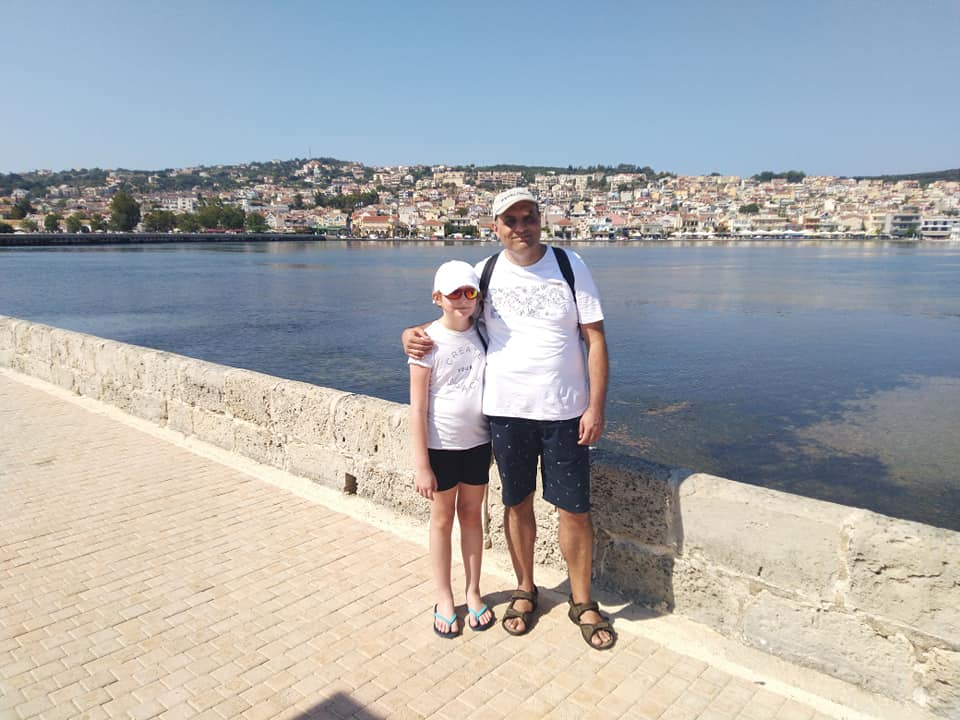
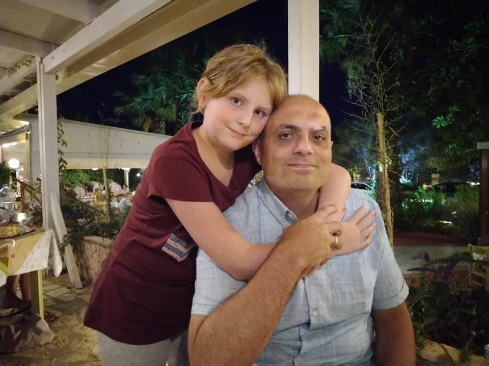
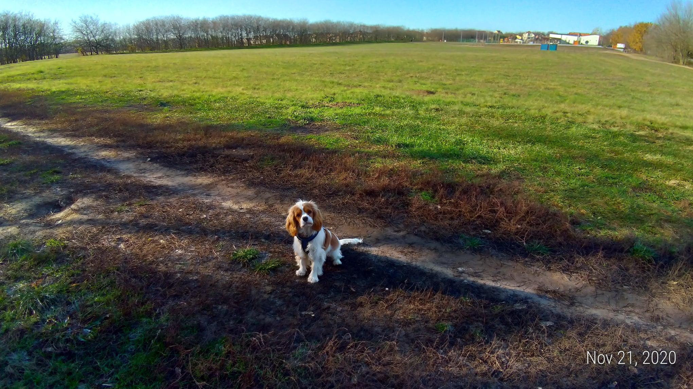
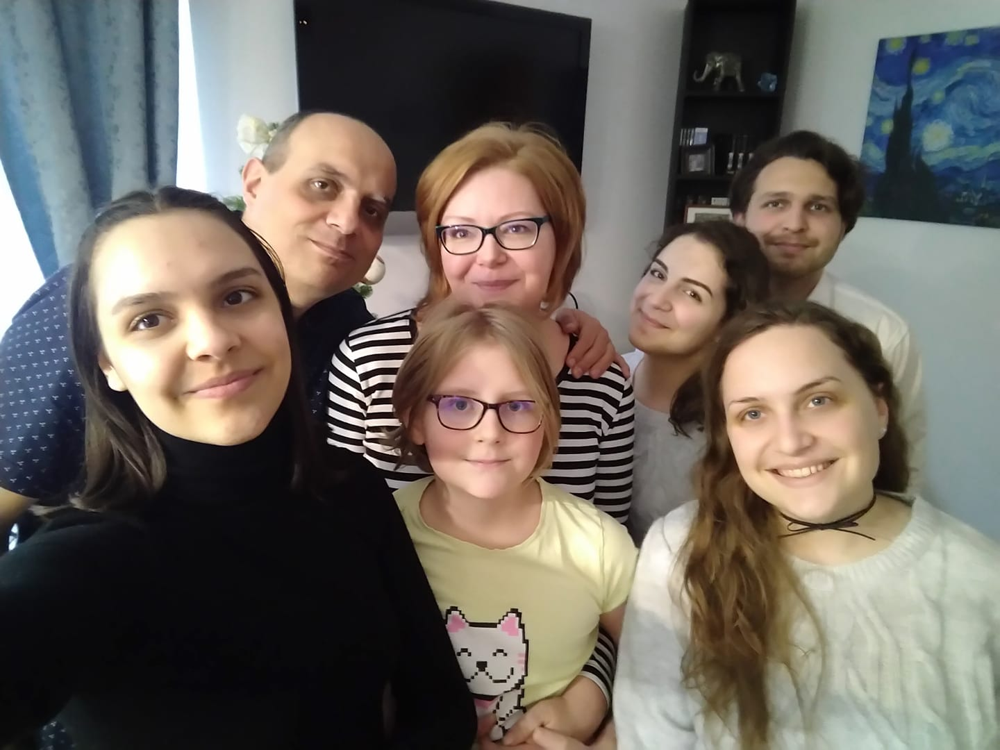
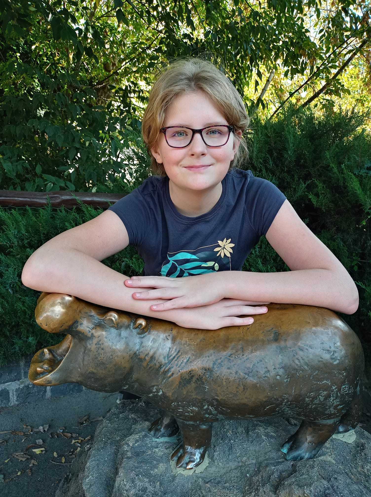
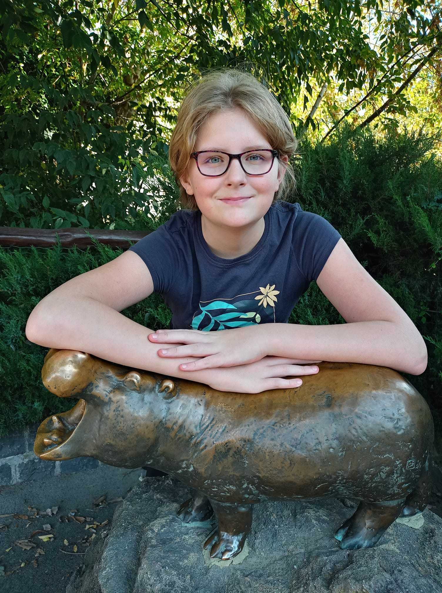
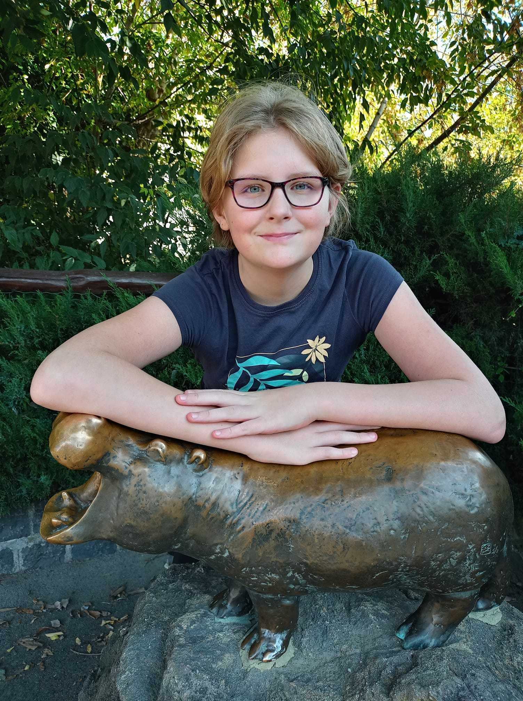

Beköszöntő
Sziasztok, Dr. Bajó Gábor vagyok! Junior fronted fejlesztőnek tanulok a Training360-nál.
Családi képek




 




Néhány pozitív tulajdonságom.
Szorgalmas vagyok.
Állítólag jó a humorom, bár néha fárasztó.
Szeretek új dolgokat megtanulni.